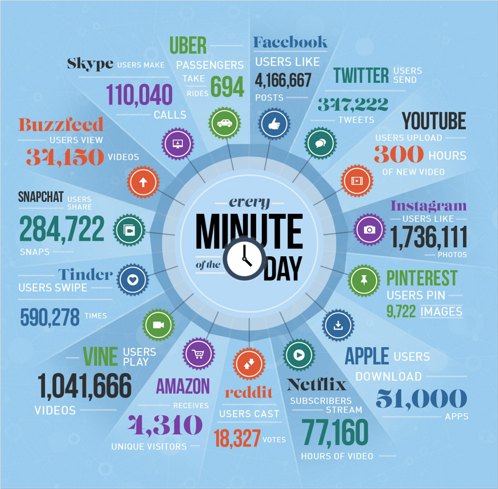
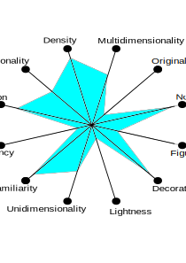
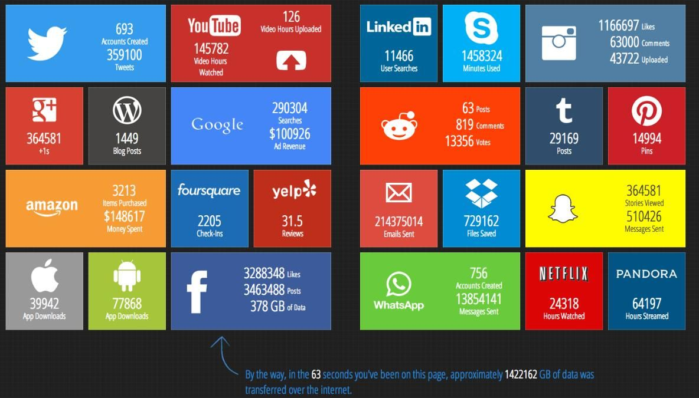
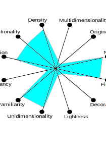

Infographics on What Happens in One Internet Minute
Data Description:
What Happens in One Internet Minute?
During one minute, there are 87,500 people tweeting on Twitter, 347,222 people scrolling on Instagram, and 1.4 million people looking for love on Tinder. At the same time, 2.1 million Snaps are snapped on Snap, 41.6 million messages are sent on Facebook Messenger and WhatsApp, and 4.8 million GIFs are served by GIPHY.
It’s also surprising to hear that 694,444 hours are watched on Netflix every minute, while $996,956 are spent online.
Did I forget anything? Take a look.
1a. Infographics:

Source
1b. Visualization Wheel:

1c. Analysis
Positives:
- There is many layers of Data being displayed (Multi-dimensional)
- This is a familar way of representation (Familiarity)
- There is no repetition of data (Novelty)
- Good number of applications with appropriate representation (Abstraction)
- Good amount of data is displayed (Density)
- Measure of visual elements is related to the comprehension of the material (Functionality and Decoration)
Negatives:
- This is a familar way of representation, could have been more creative
- Text color and font could be more visual(brighter and larger)
Improvements:
- Could have added more details for individual applications
- Could have included more applications
2a. Infographics:

Source
2b. Visualization Wheel:

2c. Analysis
Positives:
- Single layer is used to display data (Uni-dimensional)
- The representation format looks familiar (Familiarity)
- There is no repetition of data (Novelty)
- Good descriptive explanation for each application with appropriate figures (Figuration)
- Apt amount of data is displayed (Density)
- More applications and detailed description compared to first infographic
- Measure of visual elements is related to the comprehension of the material (Functionality)
Negatives:
- Basic way of Visualization is used to represent data
- Single layer and form have been used to represent data, which makes it look too old school
- There are not much details for some of the applications making it hard to recognize
Improvements:
- Could have used more layers and forms to visualize data
- Decoration could have been better
- Details of the applications could have been included
{kind=link}
{kind=link}